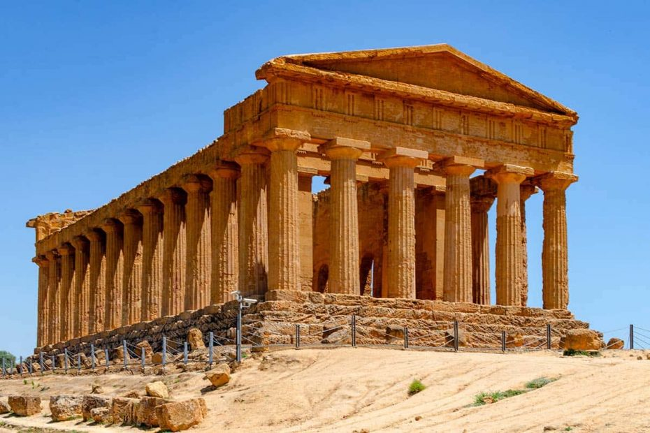

Bio
Last updated: January 2025
I was born on February 25th, 1999 in Agrigento, a small city in Sicily. The very same night, Fabio Fazio interviewed Mikhail Gorbachev at the Festival di Sanremo.

When I was a little boy, I wanted to be a comedian. Since then, I changed my mind hundreds of times about what I wanted to be as a grown-up.
I attended the “Empedocle” classical high school in Agrigento, wanting to be a writer or something like that. But I quickly got bored and decided to change my path. At the age of 18, I moved to Turin, where I have a Bachelor in Mathematics for Engineering with full grades at the Polytechnic of Turin.
But then I got bored of doing maths for maths’ sake. I enrolled in a Master’s degree in Political and Public Communication at the University of Turin where I graduated in 2022.
I am currently enrolled in the PhD program of Analysis of Social and Economic Processes (ASEP) at the University of Milan-Biccocca. During my Ph.D. I have also been a teaching assistant in the courses of Mathematics and Public Policies in the Bachelor’s of Organization Sciences (UNIMIB). Since February 2024 I live in Antwerp (BE), working with the “Media, Movement, and Politics (M2P)”. It started as a research stay, but it became my life, and now I’m based in Antwerp until further notice.
Through the years I have also worked outside academia, in the political communication and marketing fields, managing social media pages and media relations for political organizations and working for electoral campaigns as deputy campaign coordinator and junior researcher during the Italian general political elections in 2022.
In my free time I still love writing and learning languages. I am currently learning Dutch, which helps me to integrate more in Belgian society. After that, I plan to refresh my French as well. I also love biking, and listening to music of every genre. My all-time favorites? The Cure, Fabrizio De André, and Elio e le Storie Tese. My favorite directors are Paolo Sorrentino and Wes Anderson (but I swear I am not that kind of hipster). My favorite TV show is probably Scrubs because it’s the only comedy show that I still find amusing after 20 years from its release. I am a huge fan of stand-up comedy.